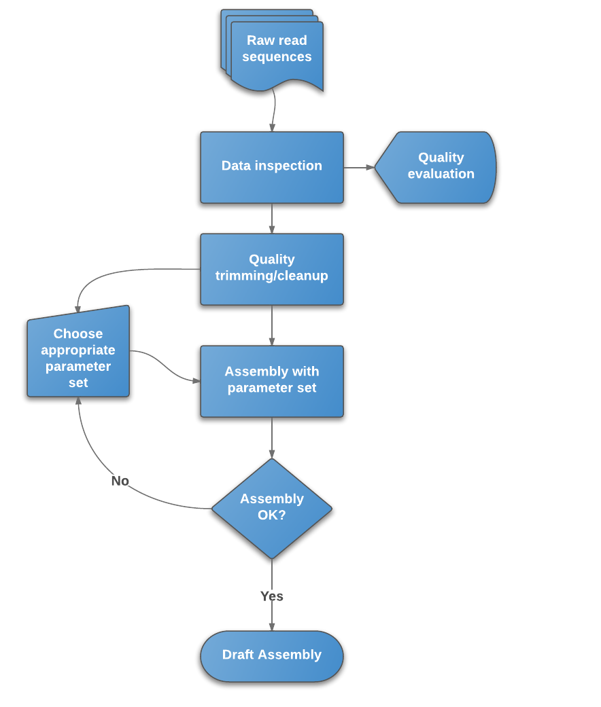

De novo Genome Assembly for Illumina Data¶
Protocol¶
Written and maintained by Simon Gladman - Melbourne Bioinformatics (formerly VLSCI)
Protocol Overview / Introduction¶
In this protocol we discuss and outline the process of de novo assembly for small to medium sized genomes.
What is de novo genome assembly?¶
Genome assembly refers to the process of taking a large number of short DNA sequences and putting them back together to create a representation of the original chromosomes from which the DNA originated [1]. De novo genome assemblies assume no prior knowledge of the source DNA sequence length, layout or composition. In a genome sequencing project, the DNA of the target organism is broken up into millions of small pieces and read on a sequencing machine. These “reads” vary from 20 to 1000 nucleotide base pairs (bp) in length depending on the sequencing method used. Typically for Illumina type short read sequencing, reads of length 36 - 150 bp are produced. These reads can be either “single ended” as described above or “paired end.” A good summary of other types of DNA sequencing can be found here.
Paired end reads are produced when the fragment size used in the sequencing process is much longer (typically 250 - 500 bp long) and the ends of the fragment are read in towards the middle. This produces two “paired” reads. One from the left hand end of a fragment and one from the right with a known separation distance between them. (The known separation distance is actually a distribution with a mean and standard deviation as not all original fragments are of the same length.) This extra information contained in the paired end reads can be useful for helping to tie pieces of sequence together during the assembly process.
The goal of a sequence assembler is to produce long contiguous pieces of sequence (contigs) from these reads. The contigs are sometimes then ordered and oriented in relation to one another to form scaffolds. The distances between pairs of a set of paired end reads is useful information for this purpose.
The mechanisms used by assembly software are varied but the most common type for short reads is assembly by de Bruijn graph. See this document for an explanation of the de Bruijn graph genome assembler “Velvet.”
Genome assembly is a very difficult computational problem, made more difficult because many genomes contain large numbers of identical sequences, known as repeats. These repeats can be thousands of nucleotides long, and some occur in thousands of different locations, especially in the large genomes of plants and animals. [1]
Why do we want to assemble an organism’s DNA?¶
Determining the DNA sequence of an organism is useful in fundamental research into why and how they live, as well as in applied subjects. Because of the importance of DNA to living things, knowledge of a DNA sequence may be useful in practically any biological research. For example, in medicine it can be used to identify, diagnose and potentially develop treatments for genetic diseases. Similarly, research into pathogens may lead to treatments for contagious diseases [2].
The protocol in a nutshell:¶
- Obtain sequence read file(s) from sequencing machine(s).
- Look at the reads - get an understanding of what you’ve got and what the quality is like.
- Raw data cleanup/quality trimming if necessary.
- Choose an appropriate assembly parameter set.
- Assemble the data into contigs/scaffolds.
- Examine the output of the assembly and assess assembly quality.
Figure 1: Flowchart of de novo assembly protocol.

Raw read sequence file formats.¶
Raw read sequences can be stored in a variety of formats. The reads can be stored as text in a Fasta file or with their qualities as a FastQ file. They can also be stored as alignments to references in other formats such as SAM or its binary compressed implementation BAM. All of the file formats (with the exception of the binary BAM format) can be compressed easily and often are stored so (.gz for gzipped files.)
The most common read file format is FastQ as this is what is produced by the Illumina sequencing pipeline. This will be the focus of our discussion henceforth.
Bioinformatics tools for this protocol.¶
There are a number of tools available for each step in the genome assembly protocol. These tools all have strengths and weaknesses and have their own application space. Suggestions rather than prescriptions for tools will be made for each of the steps. Other tools could be substituted in each case depending on user preference, experience or problem type.
Genomics Virtual Laboratory resources for this protocol.¶
Depending on your requirements and skill base there are two options for running this protocol using GVL computing resources.
-
You can use Galaxy-tut or your own GVL server.
- All of the suggested tools for this protocol are installed and available.
- All of the suggested tools for this protocol are installed and available.
-
If you’re happy and comfortable using the command line, you can do this with your own GVL Linux instance on the NeCTAR Research Cloud.
- Most of the suggested tools are available on the command line as environment modules.
- Enter
module availat a command prompt on your instance for details.
You can also use your own computing resources.
Section 1: Read Quality Control¶
Purpose:¶
The purpose of this section of the protocol is to show you how to understand your raw data, make informed decisions on how to handle it and maximise your chances of getting a good quality assembly. Knowledge of the read types, the number of reads, their GC content, possible contamination and other issues are important. This information will give you an idea of any quality issues with the data and guide you on the choice of data trimming/cleanup methods to use. Cleaning up the raw data before assembly can lead to much better assemblies as contamination and low quality error prone reads will have been removed. It will also give you a better guide as to setting appropriate input parameters for the assembly software. It is a good idea to perform these steps on all of your read files as they could have very different qualities.
Steps involved and suggested tools:¶
Examine the quality of your raw read files.¶
For FastQ files (the most common), the suggested tool is FastQC. Details can be found here. FastQC can be run from within Galaxy or by command line. (It has a GUI interface for the command line version.)
FastQC on any GVL Galaxy is located in: NGS: QC and Manipulation → FastQC: Comprehensive QC
Command line: fastqc
- Details on installation and use can be found here.
Some of the important outputs of FastQC for our purposes are:
- Read length - Will be important in setting maximum k-mer size value for assembly
- Quality encoding type - Important for quality trimming software
- % GC - High GC organisms don’t tend to assemble well and may have an uneven read coverage distribution.
- Total number of reads - Gives you an idea of coverage..
- Dips in quality near the beginning, middle or end of the reads - Determines possible trimming/cleanup methods and parameters and may indicate technical problems with the sequencing process/machine run.
- Presence of highly recurring k-mers - May point to contamination of reads with barcodes, adapter sequences etc.
- Presence of large numbers of N’s in reads - May point to poor quality sequencing run. You need to trim these reads to remove N’s.
Quality trimming/cleanup of read files.¶
Now that you have some knowledge about the raw data, it is important to use this information to clean up and trim the reads to improve its overall quality before assembly. There are a number of tools available in Galaxy and by command line that can perform this step (to varying degrees) but you’ll need one that can handle read pairing if you’ve got paired end reads. If one of the ends of a pair is removed, the orphaned read needs to be put into a separate “orphaned reads” file. This maintains the paired ordering of the reads in the paired read files so the assembly software can use them correctly. The suggested tool for this is a pair aware read trimmer called Trimmomatic. Details on Trimmomatic can be found here.
Trimmomatic on GVL systems: NGS: QC and Manipulation -> Trimmomatic
Command line: details and examples here.
java -cp <path to trimmomatic jar> org.usadellab.trimmomatic.TrimmomaticPEfor Paired End Filesjava -cp <path to trimmomatic jar> org.usadellab.trimmomatic.TrimmomaticSEfor Single End Files
Trimmomatic can perform many read trimming functions sequentially.
Suggested Trimmomatic functions to use:
- Adapter trimming
- This function trims adapters, barcodes and other contaminants from the reads.
- You need to supply a fasta file of possible adapter sequences, barcodes etc to trim. See Trimmomatic website for detailed instructions.
- The default quality settings are sensible.
- This should always be the first trimming step if it is used.
- Sliding window trimming
- This function uses a sliding window to measure average quality and trims accordingly.
- The default quality parameters are sensible for this step.
- Trailing bases quality trimming
- This function trims bases from the end of a read if they drop below a quality threshold. e.g. If base 69 of 75 drops below the threshold, the read is cut to 68 bases.
- Use FastQC report to decide whether this step is warranted and what quality value to use. A quality threshold value of 10-15 is a good starting point.
- Leading bases quality trimming
- This function works in a similar fashion to trailing bases trimming except it performs it at the start of the reads.
- Use FastQC report to determine if this step is warranted. If the quality of bases is poor at the beginning of reads it might be necessary.
- Minimum read length
- Once all trimming steps are complete, this function makes sure that the reads are still longer than this value. If not, the read is removed from the file and its pair is put into the orphan file.
- The most appropriate value for this parameter will depend on the FastQC report, specifically the length of the high quality section of the Per Base Sequence Quality graph.
Things to look for in the output:
- Number of reads orphaned by the trimming / cleanup process.
- Number of pairs lost totally.
Trimmomatic should produce 2 pairs files (1 left and 1 right hand end) and 1 or 2 single “orphaned reads” files if you trimmed a pair of read files using paired end mode. It only produces 1 output read file if you used it in single ended mode. Each read library (2 paired files or 1 single ended file) should be trimmed separately with parameters dependent on their own FastQC reports. The output files are the ones you should use for assembly.
Possible alternate tools:¶
Read quality trimming: nesoni clip, part of the nesoni suite of bioinformatics tools. Available at http://www.bioinformatics.net.au/software.shtml
Section 2: Assembly¶
Purpose:¶
The purpose of this section of the protocol is to outline the process of assembling the quality trimmed reads into draft contigs. Most assembly software has a number of input parameters which need to be set prior to running. These parameters can and do have a large effect on the outcome of any assembly. Assemblies can be produced which have less gaps, less or no mis-assemblies, less errors by tweaking the input parameters. Therefore, knowledge of the parameters and their effects is essential to getting good assemblies. In most cases an optimum set of parameters for your data can be found using an iterative method.
You shouldn’t just run it once and say, “I’ve assembled!”
Steps involved and suggested tools:¶
Assembly of the reads.¶
The suggested assembly software for this protocol is the Velvet Optimiser which wraps the Velvet Assembler. The Velvet assembler is a short read assembler specifically written for Illumina style reads. It uses the de Bruijn graph approach (see here for details).
Velvet and therefore the Velvet Optimiser is capable of taking multiple read files in different formats and types (single ended, paired end, mate pair) simultaneously.
The quality of contigs that Velvet outputs is dependent heavily on its parameter settings, and significantly better assemblies can be had by choosing them appropriately. The three most critical parameters to optimize are the hash size (k), the expected coverage (e), and the coverage cutoff ©.
Velvet Optimiser is a Velvet wrapper that optimises the values for the input parameters in a fast, easy to use and automatic manner for all datasets. It can be run from within GVL Galaxy servers or by command line.
In Galaxy: NGS-Assembly → Velvet Optimiser
Command line: details and examples here.
- Example command line for paired end reads in read files reads_R1.fq and reads_R2.fq using a kmer-size search range of 63 - 75.
VelvetOptimiser.pl -f "-shortPaired -fastq -separate reads_R1.fq reads_R2.fq" -s 63 -e 75 -d output_directory
The critical inputs for Velvet Optimiser are the read files and the k-mer size search range. The read files need to be supplied in a specific order. Single ended reads first, then by increasing paired end insert size. The k-mer size search range needs a start and end value. Each needs to be an odd integer with start < end. If you set the start hash size to be higher than the length of any of the reads in the read files then those reads will be left out of the assembly. i.e. reads of length 36 with a starting hash value of 39 will give no assembly. The output from FastQC can be a very good tool for determining appropriate start and end of the k-mer size search range. The per base sequence quality graph from FastQC shows where the quality of the reads starts to drop off and going just a bit higher can be a good end value for the k-mer size search range.
Examine the draft contigs and assessment of the assembly quality.¶
The Velvet Optimiser log file contains information about all of the assemblies ran in the optimisation process. At the end of this file is a lot of information regarding the final assembly. This includes some metric data about the draft contigs (n50, maximum length, number of contigs etc) as well as the estimates of the insert lengths for each paired end data set. It also contains information on where to find the final contigs.fa file.
The assembly parameters used in the final assembly can also be found as part of the last entry in the log file.
The contig_stats.txt file associated with the assembly shows details regarding the coverage depth of each contig (in k-mer coverage terms NOT read coverage) and this can be useful information for finding repeated contigs etc.
More detailed metrics on the contigs can be gotten using a fasta statistics tool such as fasta-stats on Galaxy. (Fasta Manipulation → Fasta Statistics).
Possible alternative software:¶
Assembly: There are a large number of short read assemblers available. Each with their own strengths and weaknesses. Some of the available assemblers include:
- Spades
- SOAP-denovo
- MIRA
- ALLPATHS
See here for a comprehensive list of - and links to - short read assembly programs.
Section 3: What next?¶
Purpose:¶
Help determine the suitability of a draft set of contigs for the rest of your analysis and what to do with them now.
Some things to remember about the contigs you have just produced:
- They’re draft contigs.
- They may contain some gaps or regions of “N”s.
- There may be some mis-assemblies.
What happens with your contigs next is determined by what you need them for:
- You only want to look at certain loci or genes in your genome
- Check and see if the regions of interest have been assembled in their entirety.
- If they have then just use the contigs of interest.
- If they haven’t, you may need to close gaps or join contigs in these areas. See below for suggestions.
- Performing an automatic annotation on your draft contigs can help with this.
- You want to perform comparative genomics analyses with your contigs
- Do your contigs cover all of the regions you are interested in?
- Some of the larger repeated elements (such as the ribosomal RNA loci) may not have all been resolved correctly. Do you care about this? If so then you’ll need to finish these areas to distinguish between the repeats.
- Do your contigs show a missing section of the reference genome(s) or a novel section? You may want to check that this is actually the case with some further experiments or by delving deeper into the assembly data. Some tool suggestions for this appear below.
- You want to “finish” the genome and publish it in genbank.
- Can your assembly be improved with more and/or different read data?
- Can you use other tools to improve your assembly with your current read data?
Possible tools for improving your assemblies:¶
Most of these tools are open source and freely available (or at least academically available) but some are commercial software. This is by no means an exhaustive list. No warranties/suitability for purpose supplied or implied!
Mis-assembly checking and assembly metric tools:
- QUAST - Quality assessment tool for genome assembly http://bioinf.spbau.ru/quast
- Mauve assembly metrics - http://code.google.com/p/ngopt/wiki/How_To_Score_Genome_Assemblies_with_Mauve
- InGAP-SV - https://sites.google.com/site/nextgengenomics/ingap and http://ingap.sourceforge.net/
- inGAP is also useful for finding structural variants between genomes from read mappings.
Genome finishing tools:
Semi-automated gap fillers:
- Gap filler - http://www.baseclear.com/landingpages/basetools-a-wide-range-of-bioinformatics-solutions/gapfiller/
- IMAGE (V2) - http://sourceforge.net/apps/mediawiki/image2/index.php?title=Main_Page
Genome visualisers and editors
- Artemis - http://www.sanger.ac.uk/resources/software/artemis/
- IGV - http://www.broadinstitute.org/igv/
- Geneious - http://www.geneious.com/
- CLC BioWorkbench - http://www.clcbio.com/products/clc-genomics-workbench/
Automated and semi automated annotation tools
- Prokka - https://github.com/tseemann/prokka
- RAST - http://www.nmpdr.org/FIG/wiki/view.cgi/FIG/RapidAnnotationServer
- JCVI Annotation Service - http://www.jcvi.org/cms/research/projects/annotation-service/